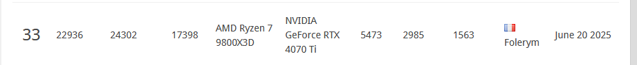

🚀 Qu'est-ce que l'Overclocking ?
L'overclocking consiste à faire fonctionner vos composants (CPU, GPU, RAM) à des fréquences supérieures à leurs spécifications d'origine pour obtenir de meilleures performances.
Avantages : Gains de performances gratuits, meilleure expérience gaming
Risques : Augmentation de la température, consommation électrique, usure prématurée si mal fait
🔧 Overclocking CPU
AMD
- PBO : Activez Precision Boost Overdrive
- Curve Optimizer : -10 à -30 sur tous les cœurs tout dépend de votre IMC
- Max Boost : +200 MHz
- 3D V-Cache : Pas d'overclocking manuel sur les 7000, seulement CO
🧠 Overclocking RAM (DDR5)
- Profil XMP/EXPO : Activez d'abord le profil constructeur puis ajustez manuellement les timings et voltages.
- FCLK (AMD) : 1:1 avec la RAM (6000 MHz = 3000 FCLK)
- Voltages :
- VDIMM : 1.4-1.45V pour DDR5-6000 pour des timings serrés
- VDDQ : 1.35V
- VPP : 1.85V
- Timings principaux : CL-RCD-RP-RAS (ex: 30-36-36-76)
- Température : Gardez sous 50°C
🎮 Overclocking GPU
- MSI Afterburner : Logiciel recommandé
- Power Limit : Montez à 120% d'abord si possible personnellement jsuis lock a 100%
- Core Clock : +50 MHz par étapes
- Memory Clock : +200-500 MHz selon la carte
- Fan Curve : Courbe agressive pour refroidissement
- Undervolt : Réduisez voltage pour moins de chaleur
🛠️ Outils Indispensables
Tests de Stabilité :
- CPU : Prime95, OCCT, Cinebench R23
- RAM : MemTest86, TM5, OCCT Memory
- GPU : FurMark, Unigine Heaven, 3DMark
Monitoring :
- HWiNFO64 : Surveillance complète des capteurs
- MSI Afterburner : OSD en jeu
- ZenTimings : Infos RAM détaillées (AMD)
- CPU-Z / GPU-Z : Informations composants
💡 Conseils Pro
- Patience : L'overclocking prend du temps
- Sauvegardez : Profils BIOS stables
- Undervolting : Souvent plus efficace que l'overclocking
- Stabilité > Performance : Un PC qui crash n'est pas utile
- Surveiller l'usure : Degradation over time des composants
- Garantie : L'OC peut annuler la garantie
🏆 Ma Config OC - 33ème au Classement 3DMark
Configuration personnelle qui m'a permis d'atteindre le 33ème rang mondial sur 3DMark :
🔥 CPU - AMD Ryzen 7 9800X3D :
- Boost Clock : +200 MHz
- Curve Optimizer : -15 sur tous les cores
- FCLK : 2200 MHz (1:1 avec la RAM)
🎮 GPU - RTX 4070ti Yeston :
- Core Clock : +145 MHz
- Memory Clock : +2000 MHz
🧠 RAM - Corsair Vengeance 6000 CL30 :
- Fréquence : 6000 MHz
- FCLK : 2200 MHz (ratio 1:1)
- Timings : Optimisés au maximum
- GDM : Off
- Stabilité : Testée 24h+
